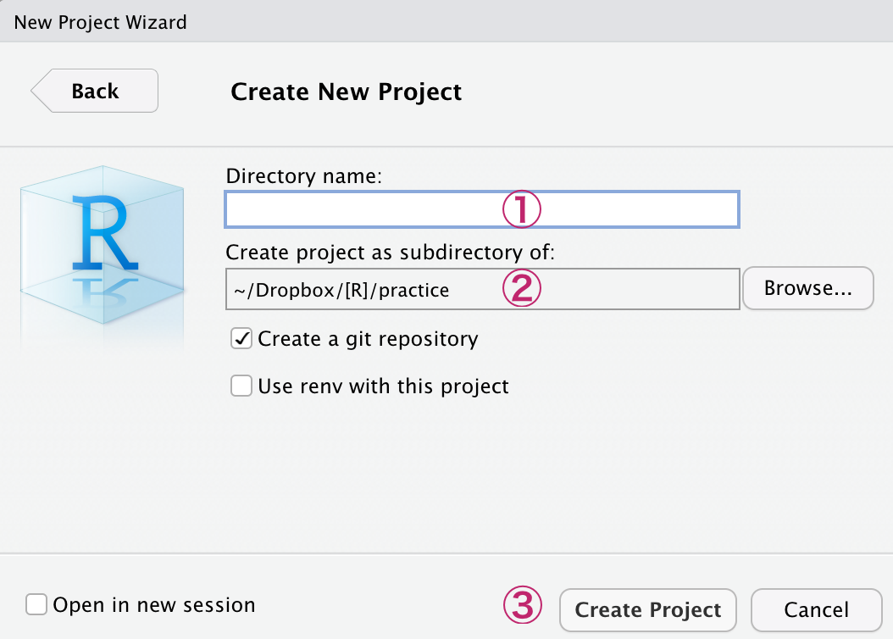

Chapter 2 Go!!
- とりあえずまずは使ってみよう！
2.1 RStudioを開く
- RStudioのアイコンから起動
- 次のような、４つの枠（ペーン）に分かれた画面が表示される

①左上：メインの作業場でコードを書くところ
②右上：変数やオブジェクトのリストが表示されたり、バージョン管理を行う
③左下：コードの実行結果が表示されるコンソールや、各種コマンドを実行するターミナルなど
④右下：各種ファイルやパッケージの表示、出力した図の表示など
2.2 コンソールに直接打ち込む
- RStudioの左下のペーンを見る
- Consoleのタブが選択されていることを確認
- 最下段の
>のあとに1+1と打ち込みEnter（macはreturn）を押す [1] 2と返ってくる2の部分が1+1の計算結果

2.3 Rスクリプトを使う
- コンソールに書いたコードは、Rstudioを終了すると消える
（実際に終了して再起動してみよう）
- だから、保存可能なRスクリプトにコードを書くことが多い
Rスクリプトに書く：
- RStudioの左上の
 をクリックし、「R Script」を選択
をクリックし、「R Script」を選択 - 空のRスクリプトファイルが作成され、左上のペーンに表示される
- 1行目に
1+1と入力してctrl+Enter（macはcommand+return）を押す
（ をクリックしても良い）
をクリックしても良い） - 左下のペーンのコンソールに結果(
[1] 2)が表示される
保存：
- Rスクリプトはctrl+s（macはcommand+s）で好きな時に保存できる
- 初回はファイル名と保存場所も決める
- 試しに、保存したRスクリプトのタブを閉じてみよう （タブの右側の×をクリック）
- 左上の をクリックし、保存したRスクリプトのファイルを選択
- Rスクリプトが先ほど保存した状態で開く

2.4 プロジェクト管理
- 研究プロジェクトが進むと、ひとつのRスクリプトだけでは管理しきれなくなる
- プロジェクトを使えば、複数のRスクリプトや関連データなどを一つのフォルダにまとめて効率よく管理できる
プロジェクトの作成：
- 左上の
 をクリックし、「New Directry」→「New Project」の順に選択
をクリックし、「New Directry」→「New Project」の順に選択
- 次の画面で①プロジェクト名と、その②作成場所を指定して③「Create Project」

- 指定した場所に、指定したプロジェクト名のフォルダができているのを確認しよう
- そのフォルダの中に「プロジェクト名.Rproj」というファイルができているのを確認しよう
- 以下は、macでDocumentフォルダ内にsugoi_projectというプロジェクトを作った例

- 初めはご利益がわかりにくいが、研究プロジェクトごとにプロジェクトを作るクセをつけよう
- そして、次の心得に従い、プロジェクト上で作業をするようにしよう
- 毎回「プロジェクト名.Rproj」をダブルクリックしてRstudioを起動
- 関連するファイルはプロジェクト名のフォルダにまとめて一元管理